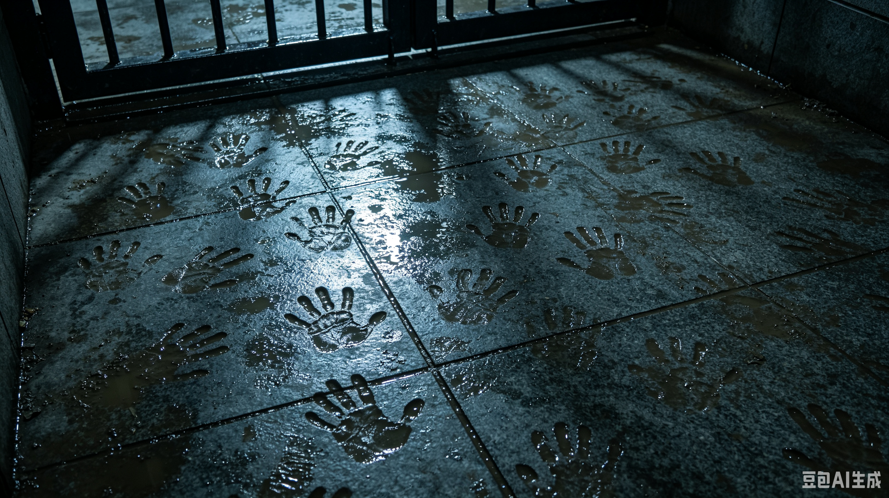

闸门在永宁堤上游。落下它，水位会被拦在上游，下游的堤就保住了——代价是上游两个村要被淹。
7 月 20 日 22:10，水文站建议落闸。指挥长批示"先抢堤，转移暂缓"。闸，没有落。
闸门平时靠绞盘手动起落，那一夜的绞盘是好的。守着绞盘的人后来在口述里说：他站在闸上等了两个小时，等一句"落"。他没等到。凌晨两点半，他听见下游传来一声很闷的响，像有人把江掀了。
他做了一件事：把绞盘的手柄卸下来，抱回了家。他说，那只手柄后来一直挂在他家墙上，挂到他死。